A few years ago, Pandora introduced a new line of charms to thier collection. It was the Disney collection. This is filled with different characters from the different movies of Disney. It also includes many significant objects such as Snow White's poison apple and Cinderella's glass slipper. There are also murano glass charms with Disney Princesses's signature colours, for example, Belle's murano glass charm is yellow compared to Ariel's which is a green that matches her tail.
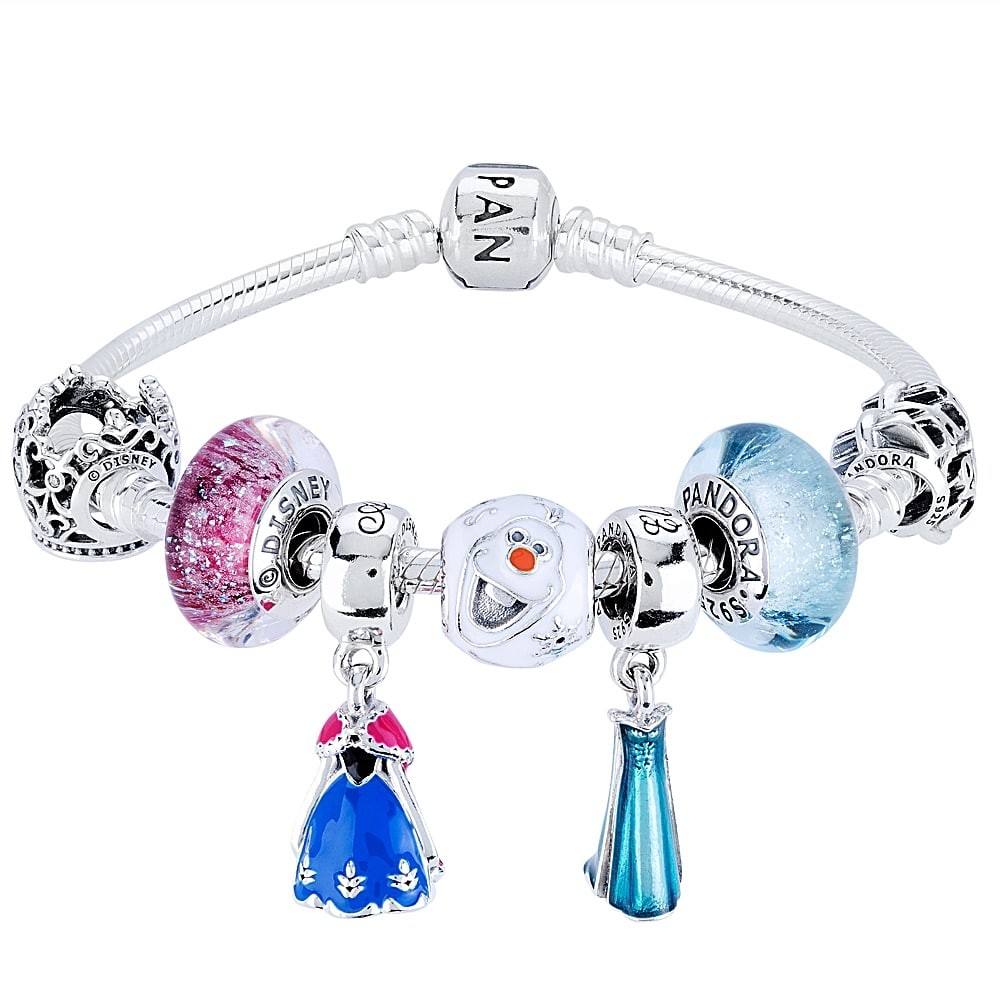 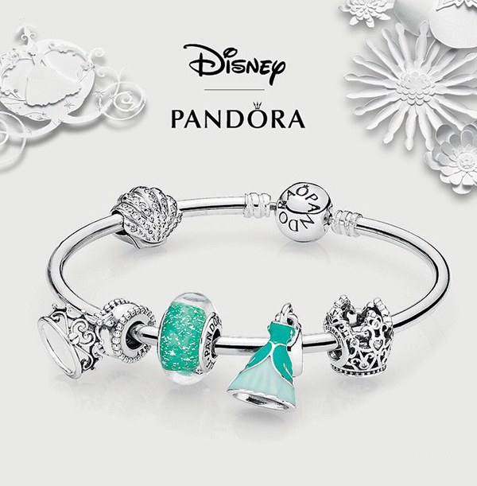 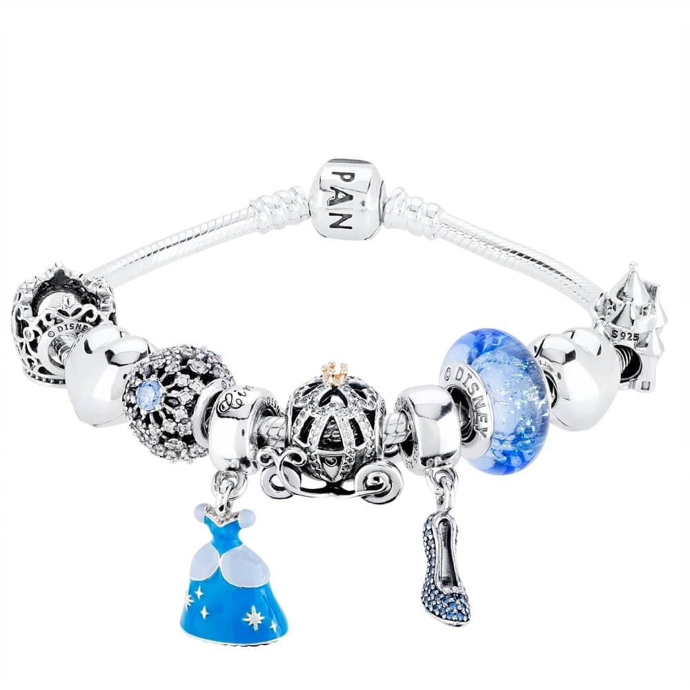Who thought that you can dress like a Disney princess? People's now offer stunning pieces of jewelry representing Disney princesses and fairies from all over the globe. They come in mostly silver and rose gold and are adorn in diamonds, jewels, and pearls. From necklaces to earrings to rings, it's pretty much a princess galore. You can pick from Cinderella to Belle, in this wonderful collection.
Paolo Sebastian Collection recently released 34 different courtue dresses based on the magic we are familiar with. Titled "Once upon a time", it is bound to make your dreams come true. It includes princesses such as Cinderella, Snow White, Belle, Jasmine, Elsa and so much more. Not only it's breataking, it takes everyone down memory lane with it's dreamy flounce. Taliored with delicate fabric, floral designs, messages and beautiful beads and jewels.
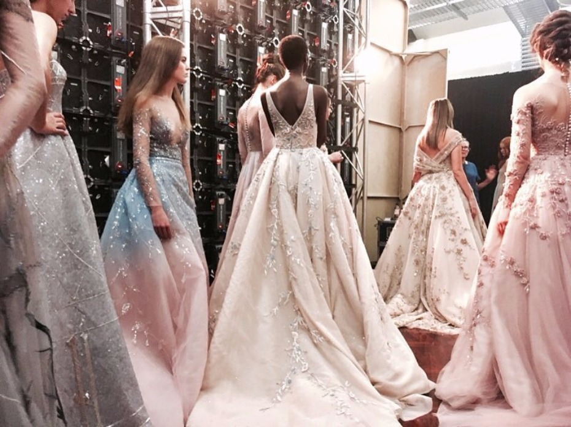 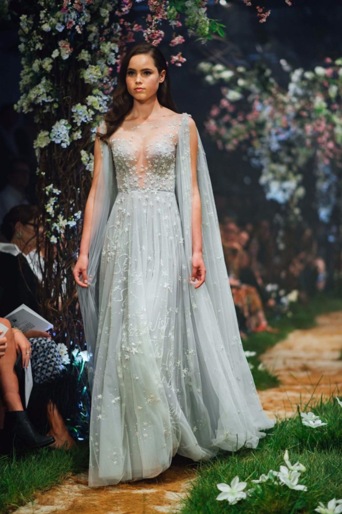 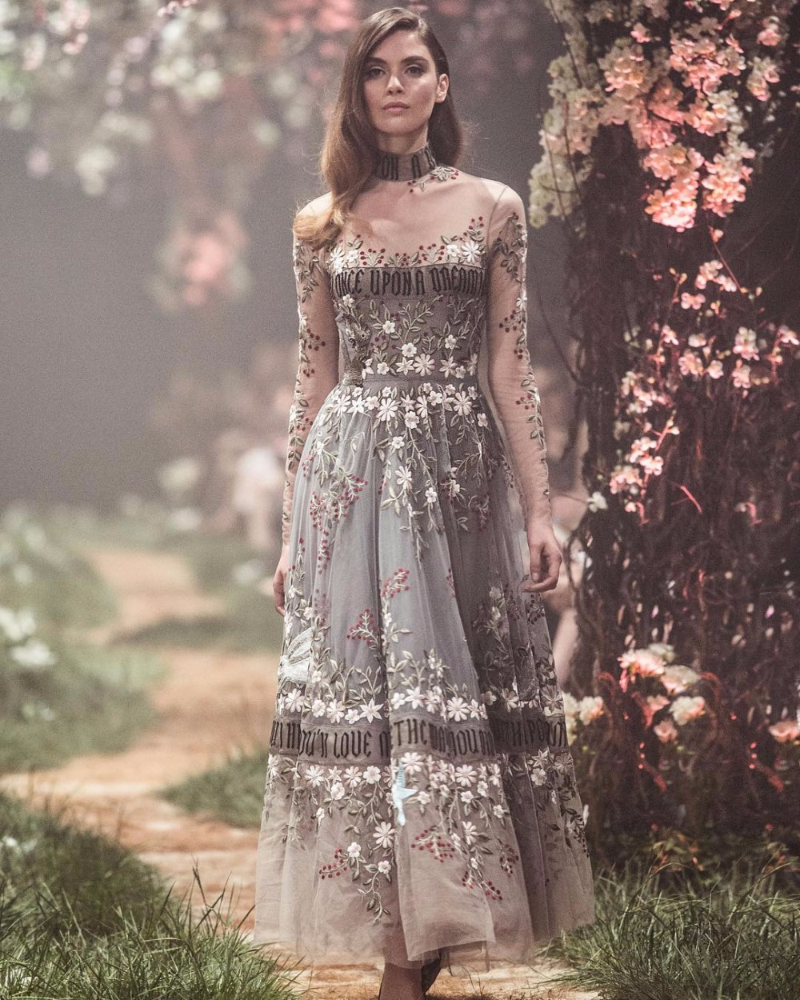 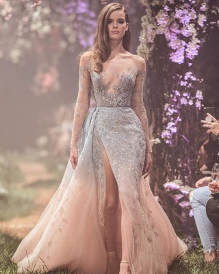 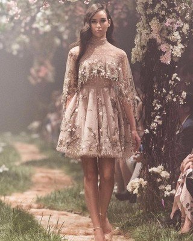Buzzfeed and other websites have observed the similarities between several dresses and Disney princess and characters. Not only they look completely stunning it appears to have matched the characters as well. From characters such as Belle, Nemo, Dory, etc. they are absolutely jaw dropping!
Check out Buzzfeed Ideas Check out Disney Style Ideas Check out Seventeen Ideas
Want to feel like a different character everyday? Want to feel like Marvel or Disney idol? Well, then you found the right blog. Disney Bound found the perfect everyday outfits to depict characters from the Disney universe. It's not just the clothes, it's everything including hats, bags and jewelry to go with it as well.
 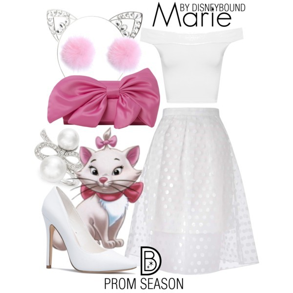
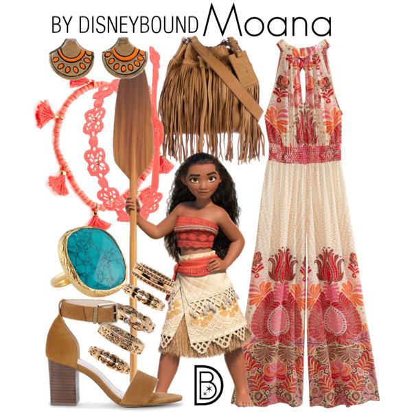
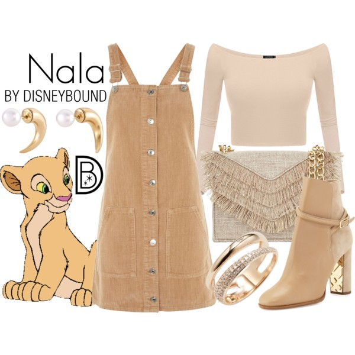
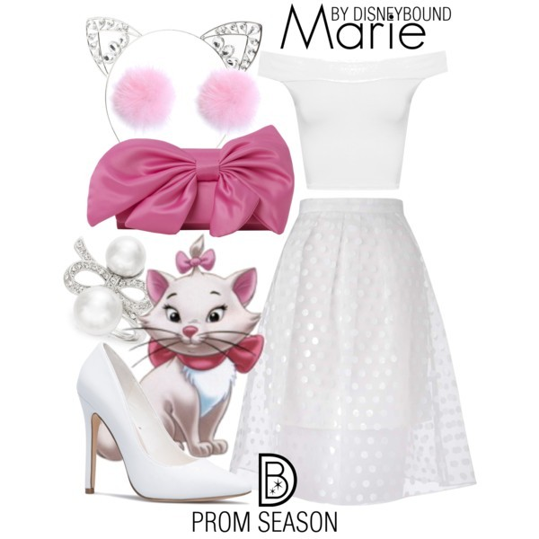
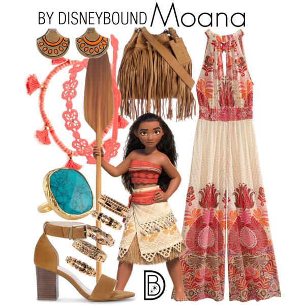
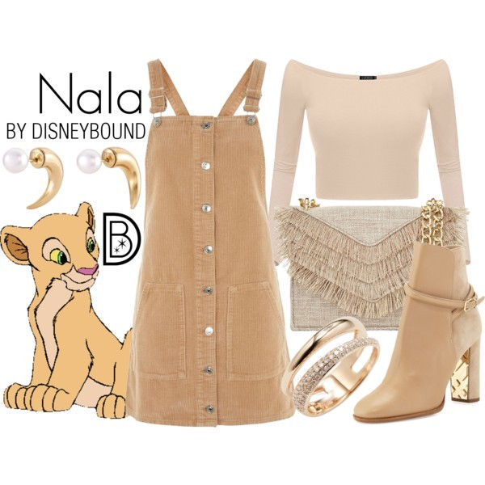
Just like how Disney is internationally known so are the inspired acts on got talent! Many people of all ages have preformed. For example, in Britain a group, Misstasia have preformed songs such as "Part of your World" and dressed like thier favourite princess. In Thailand, a group made a hip hop dance inspired by Snow White. In 2017, Pitch Choir, filled with children aged 8-14 preformed Disney songs on stage and wow the crowd. But there are so many more amazing acts!
Many youtubers have decided to add a little more magic to thier videos. Rclbeauty have created vidoes featuring the Disney Princesses doing everday things such as trick or treating and going to school. Superwomen, aka Lilly Singh, showed us a video of how Disney characters would act if they went to a house party. Many youtubers have also posted DIY's, nail art, gifts and makeup with a bit of Disney glamour. There also some youtubers who have decided to create some covers on Disney songs and the youtube fandom for Disney just keeps on growing!
There have been many musicals out of the Disney parks that have entertained people. From Cinderella to Snow White, each director's perspective shows a different and fresh version of the old classic. New inspiring costumes to beautiful costumes, it's just amazing! The vocals are sometimes even better than the original. The actors and actresses sometimes take a different approach than others. Dances are extravagant and they really do bring the magic together.
Do you ever hear a Disney song by your favourite artist? Sometimes, musicians love the original so much that they decide to change it up with thier own style. For example, Demi Lovato released her own version of "Let it Go". When Moana came out, Alessia Cara modernized the song, "How Far I'll Go" to suit her. Many have also created Disney inspired songs. Ruth B's "Lost Boy" outlined Peter Pan so perfectly. Zendaya also wrote and preformed "Neverland" based on Peter Pan. It's great to hear so many Disney inspired songs!